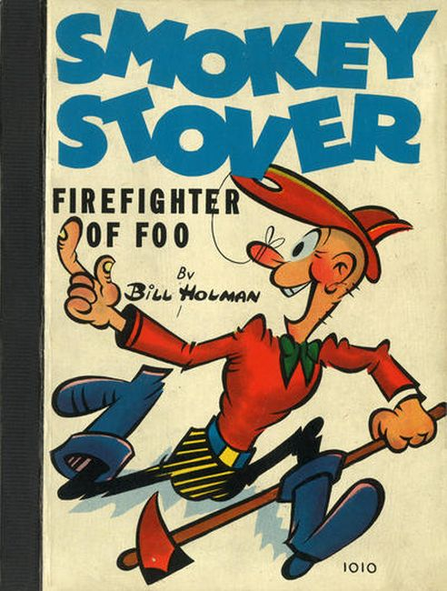
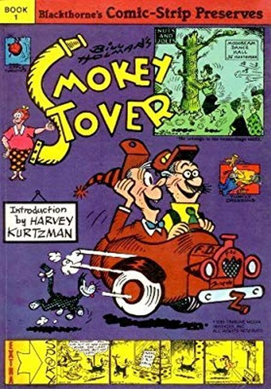

Smokey Stover is an American comic strip written and drawn by cartoonist Bill Holman, from 1935 until he retired in 1973. Distributed through the Chicago Tribune, it features the wacky misadventures of the titular fireman, and had the longest run of any comic strip in the "screwball comics" genre.
 
The goofy situations in Holman's comic strip usually feature Smokey (short for "Smokestack") Stover, the "foolish foo (fire)fighter", often riding in his impossible, two-wheeled “Foomobile” (a single-axle fire engine which resembles a modern Segway with seats, or an independent sidecar), his wife Cookie, his son Earl, his cross-eyed boss Chief Cash U. Nutt, the Chief's wife Hazel Nutt and the firehouse Dalmatian mascot, Sparky (sometimes referred to as Sparks).
Smokey has an array of nutty relatives who are also featured occasionally, with names like "Uncle Potbelly Stover", "Rusty Stover" and "Cousin Cole Stover".
Smokey wears bright red (or yellow) rubber boots and a clownish striped "helmet" (always worn back-to-front), which he sometimes ties to his nose with string, in lieu of a chinstrap. His trademark helmet also features a prominent hole in its hinged brim, which he occasionally uses as an ashtray for his lit cigar. Although most of the sequences in the strip (and the occasional comic book) center on Smokey's escapades with the Chief, the loose "plots" and situations are mainly a framework to display an endless parade of off-the-wall verbal and visual humor.